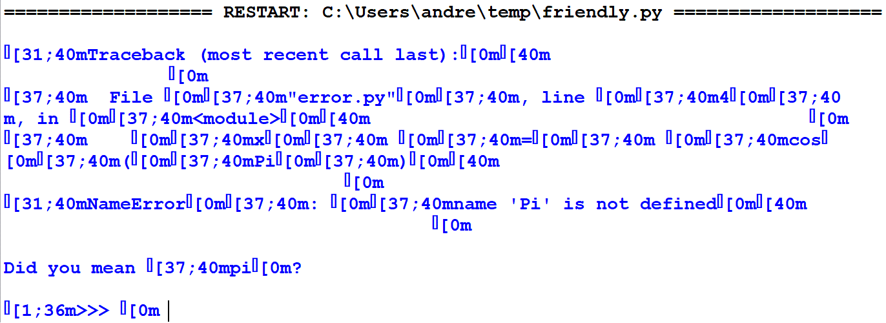

Warning
This project is being split into 3 separate projects:
friendly_traceback,friendly, andfriendly_idle.
The documentation does not reflect this change.
If you are a end-user, just install friendly until further notice.
Themes and colours¶
As mentioned before, friendly uses Rich to add colours. Syntax colouring is done by Rich using Pygments. While Pygments comes with many different styles (colour schemes), most of them do not define colours for all possible parts of a Python traceback: depending on the style, we sometimes end up with some text with the same colour as the background.
To ensure that all of friendly’s output would be styled properly, friendly includes its own “themes”: one suitable for light coloured backgrounds, and one for dark coloured backgrounds. One problem I had was to figure out all the possible styling elements. It turned out that this problem had bee “solved” in 2008 when Johannes Woolard and I created the Pygments Tango style for an old project where we sought to include all possible styling elements, while minimizing the numbers of colours used.
Designing a pygments colour style is one thing; having it faithfully displayed in a terminal is something else altogether. Below you will see various screenshots: the first one is taken using the new Windows Terminal. Other screenshots have been taken using ConEmu, using different colour schemes available from ConEmu’s settings. Much to my surprise, even though the colours I have chosen are not standard colours, they are much altered by ConEmu depending on the chosen colour scheme.
{kind=link}
{kind=link}
{kind=link}
{kind=link}
Other OS¶
Screenshots taken by MacOS or Linux users would be welcome.
Rich not supported¶
Rich works by adding escape sequences which are interpreted by terminals as adding style (colours, font style like bold, italics, or underlined, etc.). Some environment cannot interpret these escape sequences. Here is what happens if we attempt to use Rich together with Python’s IDLE for the same code as shown above:
{kind=link}
Conclusion¶
While suggestions for improving friendly are generally always welcome, suggested changes to the current default theme will likely be ignored since the end result appear to be completely dependent on the environment.
I might consider supporting custom themes, but this will likely
be a lower priority item: chances are that using either the
'light' or 'dark' theme with a custom background
colour will be sufficient in most situations for the time being.